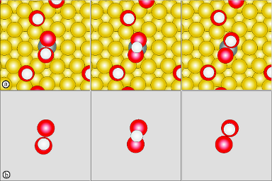

Kinetic Database¶
One of the bottlenecks in an aKMC simulation is performing the saddle point searches. The kinetic database is used to ameliorate this cost by storing information about processes as they are found and using it to predict future saddle points.
In the following figure, the hydrogen of a carboxyl group on an Au(111) surface transfers to the other oxygen (a). In this process, the hydrogen is determined to be the only moving atom, and the two oxygen atoms to be its neighbors. The other atoms are stripped from the system and the resulting configurations are stored in the database (b). If in the future the system passes through a state with a local configuration closely resembling either minimum of (b), the kinetic database will suggest a saddle to converge with a dimer search. The dimer starts with this suggested configuration and mode, and if it is a good suggestion, converges very rapidly to the saddle.

Dependencies¶
The kinetic database is contained in a library seperate from eOn. It can be found in our tsase Python module located here.
[KDB] Options¶
use_kdb: Turn KDB on/off.
type: boolean
default:
False
remove_duplicates: KDB will not make duplicate suggestions. This can slow KDB querying, so it may be best to use this only for slow potentials (DFT, etc.).
type: boolean
default:
False
kdb_only: Only use kdb in an akmc simulation, no random searches.
type: boolean
default:
False